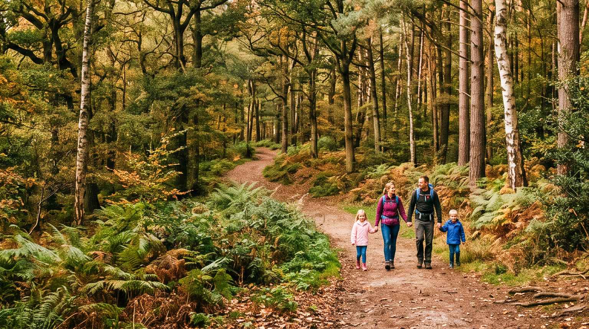
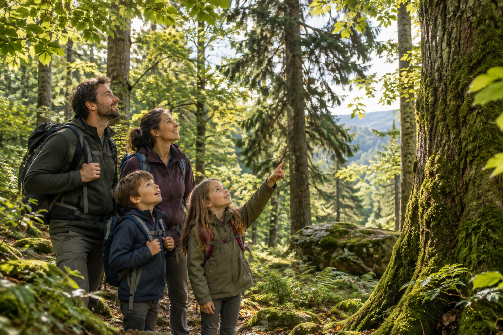
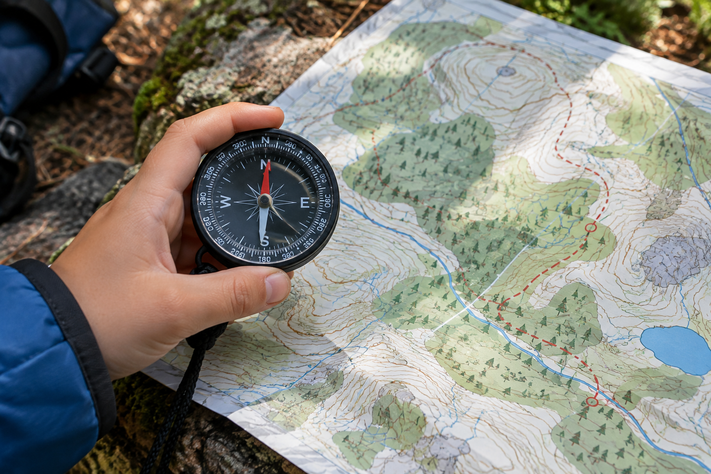
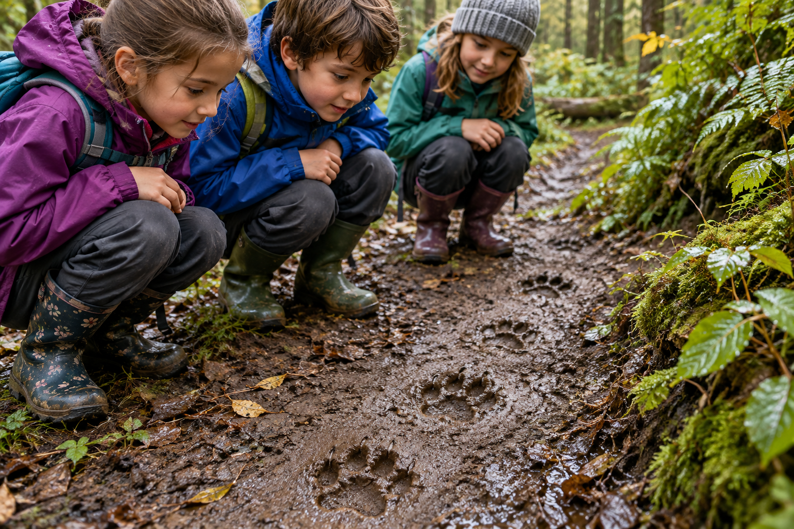
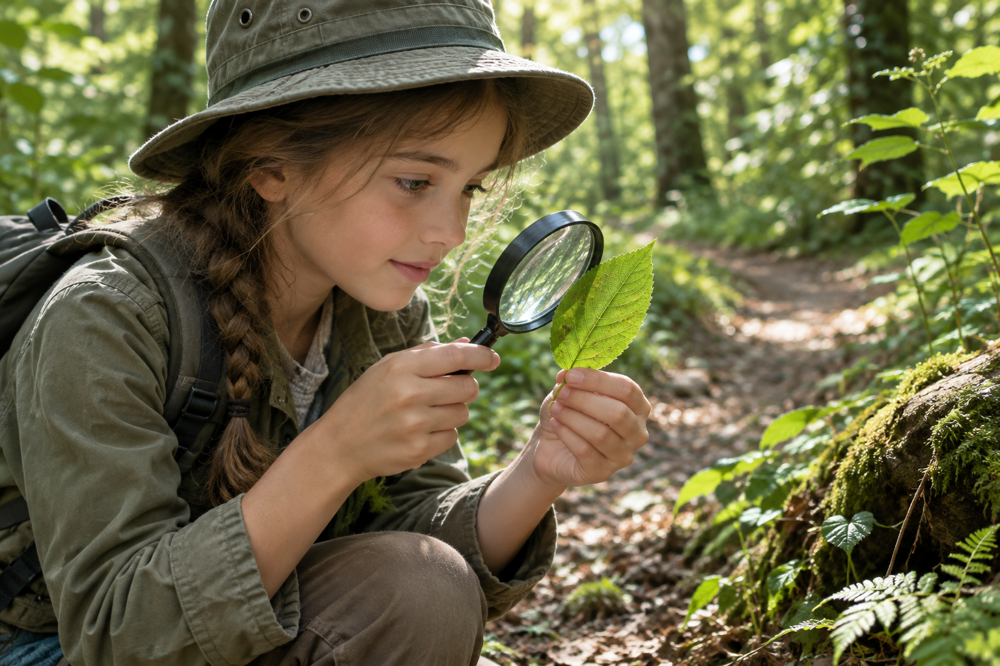
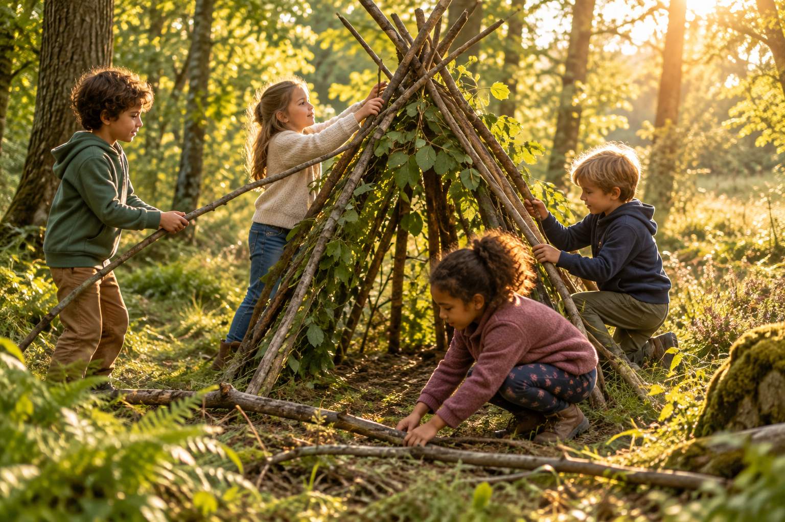

Bienvenue sur Sylva Family, un blog consacré aux découvertes en forêt dans le Limousin.
Vous y trouverez des idées de sorties, des conseils d’orientation et des activités pour apprendre
à observer et à respecter la nature en famille.

Nos derniers articles

Une première balade en forêt en famille
Une sortie en forêt ne nécessite pas de matériel compliqué.
Une tenue adaptée, une bouteille d’eau, un carnet et une grande curiosité
suffisent pour commencer à observer les arbres, les feuilles et les petits habitants
des sous-bois.
Pour rendre la promenade plus vivante, notre botaniste est là pour expliquer
la forêt et répondre aux questions des petits et des grands.
L’objectif n’est pas d’aller vite, mais de prendre le temps de regarder.

Apprendre à s’orienter avec une boussole
La boussole transforme une promenade en véritable exploration.
À l’aide de notre animateur, les enfants peuvent apprendre à reconnaître
les points cardinaux, suivre une direction simple et comparer la carte
avec ce qu’ils voient réellement sur le terrain.
Nous commençons par un petit parcours avec quelques étapes faciles.
Chaque membre de la famille peut participer : l’un tient la carte,
l’autre observe la direction et un troisième cherche le prochain repère.

Sur la piste des animaux sauvages
Les animaux ne se montrent pas toujours, mais ils laissent de nombreux indices :
empreintes, plumes, poils, noisettes grignotées, chemins dans les herbes
ou branches frottées contre un arbre.
Observer ces traces permet d’apprendre à se déplacer discrètement
et à respecter la distance nécessaire avec la faune sauvage.
Notre pisteur explique aux enfants et aux adultes comment repérer ces traces
et apprend à les reconnaître.
Une paire de jumelles et un carnet d’observation peuvent rendre l’activité
encore plus passionnante.

Reconnaître les arbres et les plantes
La forêt offre un formidable terrain d’apprentissage.
La forme des feuilles, l’écorce, les fruits et l’environnement proche
permettent de commencer à identifier quelques espèces communes du Limousin.
Notre botaniste aide les enfants à constituer un herbier.
Il est important de ne jamais consommer une plante trouvée au hasard.
Une identification doit être confirmée par une personne compétente,
et l’observation doit toujours se faire dans le respect des espèces
et des règles du lieu.

Construire un abri : apprendre en coopérant
Construire un abri temporaire permet aux enfants de découvrir
les principes d’une structure stable et de réfléchir à l’utilisation raisonnée
des matériaux disponibles.
Cette activité développe l’observation, l’organisation et la coopération.
L’exercice est réalisé avec l’un de nos accompagnateurs
et dans un espace autorisé.
Il ne faut pas couper d’arbres vivants ni dégrader le milieu naturel.
L’abri est ensuite démonté afin de laisser la forêt dans son état initial.
Restons en contact!
Reçois nos nouveaux articles et nos dernières idées de sorties en forêt par e-mail.